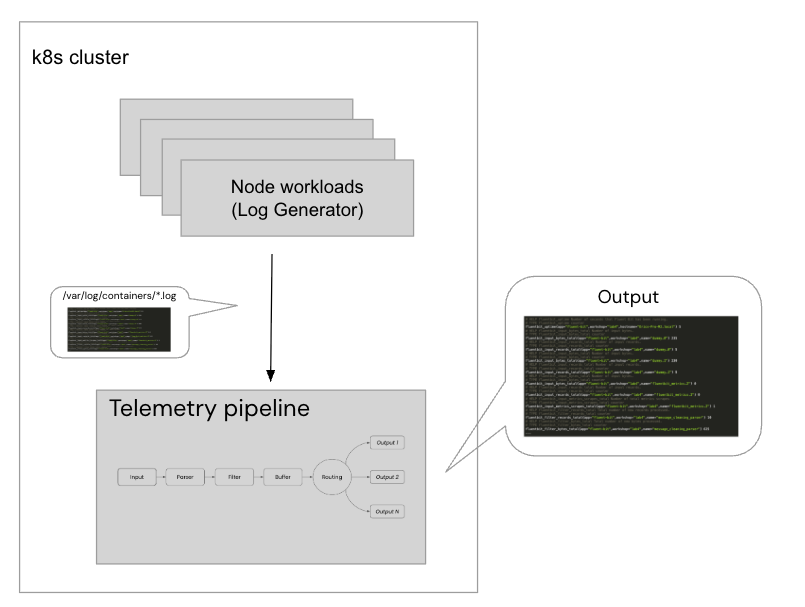

Lab 8 – Controlling logs with Fluent Bit on Kubernetes
Lab Goal
This lab explores how to use Fluent Bit to get control of logs on Kubernetes.
Intermezzo – Jumping to the solution
If you happen to be exploring Fluent Bit as an architect and want to jump to the solution in
action, we've created a
Logs Control Easy Install project.
Instead of working through this workshop, you'll find a readme file detailing how to spin up the solution and pointing to an article detailing everything you need to know to get started.
Instead of working through this workshop, you'll find a readme file detailing how to spin up the solution and pointing to an article detailing everything you need to know to get started.
Logs control – The problem statement
Why control logs on a Kubernetes cluster? When you dive into the cloud native world, this means
you are deploying containers on Kubernetes. The complexities increase dramatically for a developer
when applications and microservices are interacting in this complex and dynamic infrastructure
landscape.
Deployments can auto-scale, pods spin up and are taken down as the need arises, and underlying all of this are the various Kubernetes controlling components. All of these things are generating telemetry data, and Fluent Bit is a wonderfully simple way to take control of them across a Kubernetes cluster. It provides a way of collecting everything through a central telemetry pipeline as you go while providing the ability to parse, filter, and route all your telemetry data.
For developers, this lab will demonstrate using Fluent Bit as a single point of log collection on a development Kubernetes cluster with a deployed workload. See next slide for architectural overview of what we'll be exploring.
Deployments can auto-scale, pods spin up and are taken down as the need arises, and underlying all of this are the various Kubernetes controlling components. All of these things are generating telemetry data, and Fluent Bit is a wonderfully simple way to take control of them across a Kubernetes cluster. It provides a way of collecting everything through a central telemetry pipeline as you go while providing the ability to parse, filter, and route all your telemetry data.
For developers, this lab will demonstrate using Fluent Bit as a single point of log collection on a development Kubernetes cluster with a deployed workload. See next slide for architectural overview of what we'll be exploring.
Logs control – The lab architecture

Logs control – Locally installing lab environment
Installing on your local machine can be done in just a few steps with this
Logs Control Easy Install
project. This project automates the deployment of a multi-node Kubernetes cluster with
On the next slide you will download and install the logs control project using this project.
Kind and setting up the Ghost CMS platform to generate application logs. It
delivers a ready to use Kubernetes log generation architecture, and the installation scripts check
for and validate prerequisites automatically.On the next slide you will download and install the logs control project using this project.
Logs control – Using the easy install project
The Logs Control Easy Install project takes just 3 steps to a running architecture:
We'll walk through the
- Download and unzip the project.
- Run the installation script in a console, choosing your cluster:
init.sh— a multi-node Kubernetes cluster withKindon Podman.init-rancher.sh— a single-node Kubernetes (k3s) cluster onRancher Desktop.
- Test installation by running a few
kubectlchecks.
We'll walk through the
Kind install first, then the k3s alternative. Either one lands at the same Fluent Bit pipeline, so pick the cluster you prefer and follow that path through the rest of the lab...
Logs control – Downloading and unzip project
The first step is to
download the project.
Unzipping (use your file manager or console) should look something like this:
$ unzip logs-control-easy-install-[VERSION].zip
creating: logs-control-easy-install-[VERSION]
extracting: logs-control-easy-install-[VERSION]/.gitignore
inflating: logs-control-easy-install-[VERSION]/README.md
creating: logs-control-easy-install-[VERSION]/docs
inflating: logs-control-easy-install-[VERSION]/docs/.DS_Store
creating: logs-control-easy-install-[VERSION]/docs/demo-images
inflating: logs-control-easy-install-[VERSION]/docs/demo-images/ghost-install.png
inflating: logs-control-easy-install-[VERSION]/init.sh
creating: logs-control-easy-install-[VERSION]/support
inflating: logs-control-easy-install-[VERSION]/support/fluent-bit-helm.yaml
inflating: logs-control-easy-install-[VERSION]/support/log-generator-deployment.yaml
inflating: logs-control-easy-install-[VERSION]/support/log-generator.yaml
...
Logs control – Starting container platform (Kind)
The first installation of Fluent Bit on a Kubernetes cluster is done in several steps, but the
foundation is ensuring your Podman virtual machine is running. The following make sure you have
cleaned up any existing machines, initializes a new virtual machine, and starts it as follows:
$ podman machine rm
$ podman machine init --memory 4096
$ podman machine start
Starting machine "podman-machine-default"
...
Machine "podman-machine-default" started successfully
Logs control – Getting started with install script
In our example here we will run the console-based installation script (note the VERSION text
below is to be replaced with the version of the project you have downloaded):
$ cd logs-control-easy-install-[VERSION]
$ ./init.sh
Logs control – Enjoy the welcome ASCII art!
First, we get welcome art and details about this project:
[INFO] #######################################################
[INFO] ## ##
[INFO] ## Setting up the Logs control easy install ##
[INFO] ## ##
[INFO] ## # ##### ##### #### ##
[INFO] ## # # # # # ##
[INFO] ## # # # # ### ### ##
[INFO] ## # # # # # # ##
[INFO] ## ##### ##### ##### #### ##
[INFO] ## ##
[INFO] ## ##### ##### # # ##### #### ##### # ##
[INFO] ## # # # ## # # # # # # # ##
[INFO] ## # # # # # # # ##### # # # ##
[INFO] ## # # # # ## # # # # # # ##
[INFO] ## ##### ##### # # # # # ##### ##### ##
[INFO] ## ##
[INFO] ## ##### # # #### ##### ### # # ##
[INFO] ## # ## # # # # # # # ##
[INFO] ## # # # # ### # ##### # # ##
[INFO] ## # # ## # # # # # # ##
[INFO] ## ##### # # #### # # # ##### ##### ##
[INFO] ## ##
[INFO] ## brought to you by, ##
[INFO] ## Bala RameshBabu, Eric D. Schabell ##
[INFO] ## ##
[INFO] ## git@gitlab.com:o11y-workshops/logs-control.git ##
[INFO] ## ##
[INFO] #######################################################
...
Logs control – Checking build dependencies
Next, as you scroll down the output, we'll see validation for dependencies needed to install
this entire solution architecture. Should any fail, you will be pointed to installation
help. Here all checks are passing (noting your versions reported might be different, as long as
they pass):
...
[INFO] Checking if Podman is installed...
[INFO] Checking for Podman version...
[INFO] Installed Podman version is v5...
[INFO] Checking for running Podman machine instance...
[INFO] Checking for minimum Podman machine memory sizing for installation...
[INFO] Podman machine memory setting found (4096) met the minimum requirements (4096)...
[INFO] Checking if Kind is installed...
[INFO] Checking for Kind version...
[INFO] installed Kind version is v0.27...
[INFO] Checking if Helm is installed...
[INFO] Checking for Helm version...
[INFO] installed Helm version is v3...
[INFO] Checking that podman machine is running...
[INFO] Checking if kubectl is installed...
[INFO] Checking for kubectl version...
[INFO] installed kubectl version is v1.32...
...
Intermezzo – Whoops... that's not right?
Note that there are many fail-safe checks in this script, and you found the first one! Read the
help messages in the console output. This is the most common error, so wanted to share what it
looks like, it's caused when the Podman virtual machine is not running. Starting the machine
and rerunning the
init.sh script:
...
[INFO] Checking for running Podman machine instance...
[ERROR] There is currently no Podman machine instance running...
[ERROR] Please start an existing Podman machine, ensuring it has the minimum memory for this demo as follows:
[ERROR]
[ERROR] $ podman machine set --memory 4096
[ERROR] $ podman machine start
[WARN] Or if a new Podman machine needs to be created, please use the minimum settings as follows:
[WARN]
[WARN] $ podman machine init --memory 4096
[WARN] $ podman machine start
...
Logs control – Running installation (no errors)
This time, as you scroll down the output, you'll see validation continue and every time it will
ensure the reserved cluster name is available by removing it preemptively:
...
[INFO] Starting Kubernetes cluster deployment...
[INFO] removing existing installation directory...
[INFO] Removing any previous k8s cluster named logdemo:
using podman due to KIND_EXPERIMENTAL_PROVIDER
enabling experimental podman provider
Deleting cluster "logdemo" ...
...
Logs control – Creating Kubernetes cluster
As you scroll further down the output, you see a Kubernetes cluster being created named
logdemo as follows:
...
[INFO] Creating a new cluster named logdemo:
using podman due to KIND_EXPERIMENTAL_PROVIDER
enabling experimental podman provider
Creating cluster "logdemo" ...
✓ Ensuring node image (kindest/node:v1.32.2) 🖼
✓ Preparing nodes 📦
✓ Writing configuration 📜
✓ Starting control-plane 🕹️
✓ Installing CNI 🔌
✓ Installing StorageClass 💾
Set kubectl context to "kind-logdemo"
You can now use your cluster with:
kubectl cluster-info --context kind-logdemo
...
Logs control – Deploying application workload
Next up is validating the cluster is running and then deploying the
Log Generator
application workload to the cluster. Note there is a waiting timer that only continues once the
application is available:
...
[INFO] Kubernetes cluster creation successful...
[INFO] Setting context to use kind-logdemo...
[INFO] Deploying logging workload to cluster...
deployment.apps/log-generator created
[INFO] Confirming deployments have completed successfully on the cluster... it takes a few minutes...
[INFO] Get a coffee or tea while you wait...
pod/log-generator-7cdff9fcf8-fbmz2 condition met
[INFO] The status of log workload pods in the cluster:
NAME READY STATUS RESTARTS AGE
log-generator-7cdff9fcf8-fbmz2 1/1 Running 0 15s
...
Logs control – Deploying telemetry pipeline
Next up is the
Fluent Bit telemetry pipeline deployment to our cluster,
waiting for it to deploy, and validating the pipeline status as follows:
...
[INFO] Adding Fluent Bit Helm chart to our local repo...
[INFO] Setting up Fluent Bit logging for containers on the cluster:
[INFO] Setting cluster content to logging namespace...
[INFO] Confirming logging deployment completed successfully on the cluster:
pod/fluent-bit-p7j44 condition met
[INFO] The status of all Fluent Bit pods in the cluster are:
NAME READY STATUS RESTARTS AGE
fluent-bit-p7j44 1/1 Running 0 8s
...
Logs control – Cluster installation completes
Finally, our multi-node Kubernetes cluster with workload and telemetry pipeline is ready to use.
Here you see the end report with the final instructions on where to find everything and how to
clean it all up should you wish to pause at anytime:
...
[INFO] ===============================================================================
[INFO] = =
[INFO] = Install complete, log generating workload available on a Kubernetes =
[INFO] = cluster generating logs. =
[INFO] = =
[INFO] = To get started with controlling logs on this Kubernetes cluster see the =
[INFO] = supporting workshop lab: =
[INFO] = =
[INFO] = https://o11y-workshops.gitlab.io/workshop-fluentbit/lab08.html =
[INFO] = =
[INFO] = Note: When finished using the demo setup, you can shut it down and come =
[INFO] = back later to restart it: =
[INFO] = =
[INFO] = $ podman machine stop =
[INFO] = =
[INFO] = To clean up the cluster entirely either rerun the install script to cleanup =
[INFO] = existing cluster with the following command: =
[INFO] = =
[INFO] = $ KIND_EXPERIMENTAL_PROVIDER=podman kind --name=logdemo delete cluster =
[INFO] = =
[INFO] = To explore the deployments on this cluster, use the following to launch =
[INFO] = K9S, a console-based UI: =
[INFO] = =
[INFO] = $ k9s --kubeconfig target/logdemoconfig.yaml =
[INFO] = =
[INFO] ===============================================================================
Logs control – Validating our cluster (Kind)
There are a few things we need to do to connect to our cluster; set the
kubectl
tooling up to talk to our cluster, set up an alias to avoid adding the --kubeconfig
flag every time, and verify the containers running in the namespace logging
as follows:
# connect to our cluster.
$ kubectl --kubeconfig target/logdemoconfig.yaml config use-context kind-logdemo
Switched to context "kind-logdemo"
# setup alias for kubectl --kubeconfig target/logdemoconfig.yaml command.
alias kctl='kubectl --kubeconfig target/logdemoconfig.yaml'
# list cluster namespaces.
$ kctl get namespace
NAME STATUS AGE
default Active 65m
...
logging Active 65m
# verify Log Generator pod running.
$ kctl get pods --namespace default
NAME READY STATUS RESTARTS AGE
log-generator-7cdff9fcf8-p95xj 1/1 Running 0 66m
# verify telemetry pipeline pod running.
$ kctl get pods --namespace logging
NAME READY STATUS RESTARTS AGE
fluent-bit-pjvm6 1/1 Running 0 66m
Logs control – Installing on Kubernetes (k3s)
Prefer a single node cluster? The same project ships an
There is no Podman machine or Kind cluster to manage here, the script drives the headless backend entirely through
init-rancher.sh script
that deploys onto a Rancher Desktop
Kubernetes (k3s) cluster instead of Kind. It's assumed you have already installed Rancher Desktop
with Kubernetes enabled, which provides the rdctl commandline tooling and a
rancher-desktop kubeconfig context.There is no Podman machine or Kind cluster to manage here, the script drives the headless backend entirely through
rdctl, kubectl, and helm,
so the Rancher Desktop UI never needs to be opened.
Logs control – Running installation script (k3s)
Make sure Rancher Desktop is started with Kubernetes enabled, then from the project root run the
Rancher install script (note the VERSION text below is to be replaced with the version of the
project you have downloaded):
$ cd logs-control-easy-install-[VERSION]
$ ./init-rancher.sh
Logs control – What install is doing (k3s)
The script validates your tooling against the
rancher-desktop context, deploys
the Log Generator workload, then installs Fluent Bit onto the cluster via the
official Helm chart:
...
[INFO] Checking if rdctl is installed...
[INFO] Checking Rancher Desktop is running and Kubernetes is enabled...
[INFO] Rancher Desktop backend is running with Kubernetes enabled...
[INFO] Checking if Helm is installed...
[INFO] installed Helm version is v3...
[INFO] Checking if kubectl is installed...
[INFO] installed kubectl version is v1.32...
[INFO] Checking rancher-desktop kubeconfig context exists...
[INFO] Checking rancher-desktop cluster is reachable...
[INFO] Deploying logging workload to cluster...
deployment.apps/log-generator created
[INFO] Adding Fluent Bit Helm chart to our local repo...
[INFO] Setting up Fluent Bit logging for containers on the cluster:
...
Logs control – Cluster installation completes (k3s)
The script waits for the pipeline to come up and prints the final instructions, all pinned to the
rancher-desktop context so the active context in your kubeconfig doesn't matter:
...
[INFO] ===============================================================================
[INFO] = =
[INFO] = Install complete, log generating workload available on the Rancher =
[INFO] = Desktop Kubernetes (k3s) cluster generating logs. =
[INFO] = =
[INFO] = The status of all pods in the logging namespace: =
[INFO] = =
[INFO] = kubectl --context rancher-desktop -n logging get pods =
[INFO] = =
[INFO] = To explore the deployments on this cluster, use the following to launch =
[INFO] = K9S, a console-based UI: =
[INFO] = =
[INFO] = k9s --context rancher-desktop =
[INFO] = =
[INFO] ===============================================================================
...
Logs control – Validating our cluster (k3s)
On k3s there is no kubeconfig file to juggle, everything runs against the
rancher-desktop context and the installer already set the default namespace to
logging. Verify the Log Generator workload and the Fluent Bit pipeline pods are
running:
# no alias needed, just pin the context and namespace.
$ kubectl --context rancher-desktop -n logging get pods
NAME READY STATUS RESTARTS AGE
log-generator-6b8f9c7d5-xq7dg 1/1 Running 0 2m14s
fluent-bit-4m9zk 1/1 Running 0 98s
Logs control – Exploring pipeline configuration
The initial configuration for the Fluent Bit pipeline on our cluster is to collect all container
logs, from all namespaces from the cluster centralized location
/var/log/containers/*.log. The configuration applied is found in our project
at support/fluent-bit-helm.yaml as shown below:
$ cat support/fluent-bit-helm.yaml
args:
- --workdir=/fluent-bit/etc
- --config=/fluent-bit/etc/conf/fluent-bit.yaml
config:
extraFiles:
fluent-bit.yaml: |
service:
flush: 1
log_level: info
http_server: true
http_listen: 0.0.0.0
http_port: 2020
pipeline:
inputs:
- name: tail
tag: kube.*
read_from_head: true
path: /var/log/containers/*.log
...
outputs:
- name: stdout
match: '*'
Logs control – Viewing all container logs (Kind)
To see all the logs collected, we can view the Fluent Bit container output as follows, using the
pod name
fluent-bit-pjvm6 we found previously:
# still using the kubectl alias to display container logs.
$ kctl logs fluent-bit-pjvm6 --namespace logging
[OUTPUT-CUT-DUE-TO-LOG-VOLUME]
...
[NO-REALLY-THE-LOGS-ARE-WAY-TOO-MANY-TO-SHOW-HERE]
...
We notice that if we browse the logs that we find error messages, info messages, and a mix of
logs from the Log Generator workload, the various Kubernetes containers, and our Fluent Bit
instance. As a developer working on our cluster, how can we find anything useful in this flood
of logging?
Logs control – Viewing all container logs (k3s)
On the k3s cluster the same flood of logs is one command away. There is no
--kubeconfig flag to pass, pin the rancher-desktop
context and use a label selector so you don't need to look up the exact pod name first:
$ kubectl --context rancher-desktop -n logging logs -l app.kubernetes.io/name=fluent-bit
[OUTPUT-CUT-DUE-TO-LOG-VOLUME]
...
[NO-REALLY-THE-LOGS-ARE-WAY-TOO-MANY-TO-SHOW-HERE]
...
Logs control – Taking back control
Another thing worth noting in our Fluent Bit configuration is that we are using the
tail input plugin and setting it to read from the very beginning of each log
file. By doing this in our development cluster, we have ensured that we are not missing any
telemetry data generated before our pipeline was fully deployed. If we didn't set this to collect
from the beginning of the log file, our telemetry pipeline would miss everything
generated before our Fluent Bit pipeline started. The relevant configuration is shown below from
the file support/fluent-bit-helm.yaml:
...
pipeline:
inputs:
- name: tail
tag: kube.*
read_from_head: true
path: /var/log/containers/*.log
...
Logs control – Starting to focus (app logs)
The first thing we can do is to focus our log collection efforts on just the workload we as
a developer are interested in, which in this development cluster means finding problems with our
Ghost CMS deployment. As we are not interested in the logs from anything happening in the
kube-system namespace, we can narrow the focus of our Fluent Bit input plugin
to only examine Ghost log files. This can be done by making a new configuration file called
myfluent-bit-helm.yaml file and change the default path to select only logs
with the name generator in them as follows:
args:
- --workdir=/fluent-bit/etc
- --config=/fluent-bit/etc/conf/fluent-bit.yaml
config:
extraFiles:
fluent-bit.yaml: |
service:
flush: 1
log_level: info
http_server: true
http_listen: 0.0.0.0
http_port: 2020
pipeline:
inputs:
- name: tail
tag: kube.*
read_from_head: true
path: /var/log/containers/*generator*
multiline.parser: docker, cri
outputs:
- name: stdout
match: '*'
Logs control – Updating pipeline config (app logs, Kind)
The next step is to update our Fluent Bit pipeline by using the
helm update
command and our new configuration file myfluent-bit-helm.yaml as follows:
# Noting how long this command is, it's very handy to
# create an alias of this command as follows:
# alias fb-update='[INSERT_HELM_UPDATE_COMMAND_FROM_BELOW]'
#
$ helm upgrade --kubeconfig target/logdemoconfig.yaml \
--install fluent-bit fluent/fluent-bit \
--set image.tag=5.1.1 \
--namespace=logging \
--create-namespace \
--values=myfluent-bit-helm.yaml
Release "fluent-bit" has been upgraded. Happy Helming!
NAME: fluent-bit
LAST DEPLOYED: Mon Nov 3 16:38:15 2025
NAMESPACE: logging
STATUS: deployed
...
Logs control – Validating pipeline update (app logs, Kind)
Now explore the logs being collected by our Fluent Bit pipeline as shown below and notice that
all the Kubernetes generated logs are no longer being collected, so we can focus on our deployed
workload:
# still using our kubectl alias here and finding the new
# updated fluent bit container name.
$ kctl get pods --namespace logging
NAME READY STATUS RESTARTS AGE
fluent-bit-5rnh6 1/1 Running 0 4m12s
# using the kubectl alias to display container logs.
$ kctl logs fluent-bit-5rnh6 --namespace logging
...
[0] kube.var.log.containers.log-generator-7cdff9fcf8-p95xj_default_log-generator-450d9587200db87cca58233e2e77df5bc461b30973d890b727a0f9ae668ed5d1.log: [[1762206344.982709683, {}], {"time"=>"2025-11-03T21:45:44.982709683Z", "stream"=>"stdout", "_p"=>"F", "log"=>"Mon Nov 3 21:45:44 UTC 2025 - This is a log message from the log generator."}]
[0] kube.var.log.containers.log-generator-7cdff9fcf8-p95xj_default_log-generator-450d9587200db87cca58233e2e77df5bc461b30973d890b727a0f9ae668ed5d1.log: [[1762206347.986948578, {}], {"time"=>"2025-11-03T21:45:47.986948578Z", "stream"=>"stdout", "_p"=>"F", "log"=>"Mon Nov 3 21:45:47 UTC 2025 - {message:true 200 success}"}]
[0] kube.var.log.containers.log-generator-7cdff9fcf8-p95xj_default_log-generator-450d9587200db87cca58233e2e77df5bc461b30973d890b727a0f9ae668ed5d1.log: [[1762206350.991325640, {}], {"time"=>"2025-11-03T21:45:50.99132564Z", "stream"=>"stderr", "_p"=>"F", "log"=>"Mon Nov 3 21:45:50 UTC 2025 - {message:false 500 error}"}]
...
This is just a selection of log lines from the total output. If you look closer you see these
logs have their own sort of format, so let's standardize them.
Logs control – Updating pipeline config (app logs, k3s)
On k3s we roll out the very same focused configuration with a
helm upgrade
against the rancher-desktop context, then follow the new pod. Notice only the
Log Generator container logs are now collected (exit with CTRL-C):
# apply the same myfluent-bit-helm.yaml against the k3s cluster.
$ helm --kube-context rancher-desktop upgrade --install fluent-bit fluent/fluent-bit \
--set image.tag=5.1.1 \
--namespace logging --create-namespace \
--values myfluent-bit-helm.yaml
Release "fluent-bit" has been upgraded. Happy Helming!
# follow the rolled out pod by label, no pod name lookup needed.
$ kubectl --context rancher-desktop -n logging logs -l app.kubernetes.io/name=fluent-bit -f
...
[0] kube.var.log.containers.log-generator-...default...log: [[1762206344.982709683, {}], {"time"=>"2025-11-03T21:45:44.982709683Z", "stream"=>"stdout", "_p"=>"F", "log"=>"Mon Nov 3 21:45:44 UTC 2025 - This is a log message from the log generator."}]
[0] kube.var.log.containers.log-generator-...default...log: [[1762206347.986948578, {}], {"time"=>"2025-11-03T21:45:47.986948578Z", "stream"=>"stdout", "_p"=>"F", "log"=>"Mon Nov 3 21:45:47 UTC 2025 - {message:true 200 success}"}]
...
Logs control – Standardizing the output (app logs)
The previous log lines have their own sort of format, so let's standardize them so that JSON is
the output format and make the various timestamps a bit more readable by changing your Fluent
Bit output plugin configuration as follows:
args:
- --workdir=/fluent-bit/etc
- --config=/fluent-bit/etc/conf/fluent-bit.yaml
config:
extraFiles:
fluent-bit.yaml: |
service:
flush: 1
log_level: info
http_server: true
http_listen: 0.0.0.0
http_port: 2020
pipeline:
inputs:
- name: tail
tag: kube.*
read_from_head: true
path: /var/log/containers/*generator*
multiline.parser: docker, cri
outputs:
- name: stdout
match: '*'
format: json_lines
json_date_format: java_sql_timestamp
Logs control – Updating pipeline output (app logs, Kind)
We update our Fluent Bit pipeline to apply these changes by using the
helm update
command and our new configuration file myfluent-bit-helm.yaml as follows:
# Noting how long this command is, it's very handy to
# create an alias of this command as follows:
# alias fb-update='[INSERT_HELM_UPDATE_COMMAND_FROM_BELOW]'
#
$ helm upgrade --kubeconfig target/logdemoconfig.yaml \
--install fluent-bit fluent/fluent-bit \
--set image.tag=5.1.1 \
--namespace=logging \
--create-namespace \
--values=myfluent-bit-helm.yaml
Release "fluent-bit" has been upgraded. Happy Helming!
NAME: fluent-bit
LAST DEPLOYED: Mon Nov 3 16:47:05 2025
NAMESPACE: logging
STATUS: deployed
...
Logs control – Validating pipeline output (app logs, Kind)
Now explore the logs being collected by our Fluent Bit pipeline as shown below and notice that
the output format is now more concise and readable:
# still using our kubectl alias here and finding the new
# updated fluent bit container name.
$ kctl get pods --namespace logging
NAME READY STATUS RESTARTS AGE
fluent-bit-f2glv 1/1 Running 0 6m7s
# using the kubectl alias to display container logs.
$ kctl logs fluent-bit-f2glv --namespace logging
...
{"date":"2025-11-03 21:48:30.211758","time":"2025-11-03T21:48:30.211758597Z","stream":"stdout","_p":"F","log":"Mon Nov 3 21:48:30 UTC 2025 - This is a log message from the log generator."}
{"date":"2025-11-03 21:48:33.216563","time":"2025-11-03T21:48:33.216563827Z","stream":"stdout","_p":"F","log":"Mon Nov 3 21:48:33 UTC 2025 - {message:true 200 success}"}
{"date":"2025-11-03 21:48:36.221643","time":"2025-11-03T21:48:36.221643473Z","stream":"stderr","_p":"F","log":"Mon Nov 3 21:48:36 UTC 2025 - {message:false 500 error}"}
...
Now if we look closer at the log messages and being the developer we are, we've noticed a mix of
stderr and stdout messages. Let's take control and clear
out all the lines that do not contain stderr, as we are only interested in
what is broken.
Logs control – Updating pipeline output (app logs, k3s)
Roll out the standardized output on k3s the same way. The events are now emitted as concise, more
readable JSON lines (exit with CTRL-C):
# apply the same myfluent-bit-helm.yaml against the k3s cluster.
$ helm --kube-context rancher-desktop upgrade --install fluent-bit fluent/fluent-bit \
--set image.tag=5.1.1 \
--namespace logging --create-namespace \
--values myfluent-bit-helm.yaml
Release "fluent-bit" has been upgraded. Happy Helming!
# follow the rolled out pod by label, no pod name lookup needed.
$ kubectl --context rancher-desktop -n logging logs -l app.kubernetes.io/name=fluent-bit -f
...
{"date":"2025-11-03 21:48:30.211758","time":"2025-11-03T21:48:30.211758597Z","stream":"stdout","_p":"F","log":"Mon Nov 3 21:48:30 UTC 2025 - This is a log message from the log generator."}
{"date":"2025-11-03 21:48:33.216563","time":"2025-11-03T21:48:33.216563827Z","stream":"stdout","_p":"F","log":"Mon Nov 3 21:48:33 UTC 2025 - {message:true 200 success}"}
{"date":"2025-11-03 21:48:36.221643","time":"2025-11-03T21:48:36.221643473Z","stream":"stderr","_p":"F","log":"Mon Nov 3 21:48:36 UTC 2025 - {message:false 500 error}"}
...
Logs control – Keeping only errors (app logs)
To focus on error messages for our application testing, we need to add a
filter
section to our Fluent Bit pipeline configuration using the grep filter and
targeting a regular expression to select the keys stream or
stderr as follows:
args:
- --workdir=/fluent-bit/etc
- --config=/fluent-bit/etc/conf/fluent-bit.yaml
config:
extraFiles:
fluent-bit.yaml: |
service:
flush: 1
log_level: info
http_server: true
http_listen: 0.0.0.0
http_port: 2020
pipeline:
inputs:
- name: tail
tag: kube.*
read_from_head: true
path: /var/log/containers/*generator*
multiline.parser: docker, cri
filters:
- name: grep
match: '*'
regex: stream stderr
outputs:
- name: stdout
match: '*'
format: json_lines
json_date_format: java_sql_timestamp
Logs control – Updating for only errors (app logs, Kind)
We update our Fluent Bit pipeline to apply these changes by using the
helm update
command and our new configuration file myfluent-bit-helm.yaml as follows:
# Noting how long this command is, it's very handy to
# create an alias of this command as follows:
# alias fb-update='[INSERT_HELM_UPDATE_COMMAND_FROM_BELOW]'
#
$ helm upgrade --kubeconfig target/logdemoconfig.yaml \
--install fluent-bit fluent/fluent-bit \
--set image.tag=5.1.1 \
--namespace=logging \
--create-namespace \
--values=myfluent-bit-helm.yaml
Release "fluent-bit" has been upgraded. Happy Helming!
NAME: fluent-bit
LAST DEPLOYED: Mon Nov 3 16:50:40 2025
NAMESPACE: logging
STATUS: deployed
...
Logs control – Validating only errors (app logs, Kind)
Now explore the logs being collected by our Fluent Bit pipeline as shown below and notice that
the output format is now more concise and readable:
# still using our kubectl alias here and finding the new
# updated fluent bit container name.
$ kctl get pods --namespace logging
NAME READY STATUS RESTARTS AGE
fluent-bit-r8466 1/1 Running 0 34s
# using the kubectl alias to display container logs.
$ kctl logs fluent-bit-r8466 --namespace logging
...
{"date":"2025-11-03 21:51:21.449244","time":"2025-11-03T21:51:21.449244803Z","stream":"stderr","_p":"F","log":"Mon Nov 3 21:51:21 UTC 2025 - {message:false 500 error}"}
{"date":"2025-11-03 21:51:32.463169","time":"2025-11-03T21:51:32.463169474Z","stream":"stderr","_p":"F","log":"Mon Nov 3 21:51:32 UTC 2025 - {message:false 500 error}"}
{"date":"2025-11-03 21:51:43.480646","time":"2025-11-03T21:51:43.480646315Z","stream":"stderr","_p":"F","log":"Mon Nov 3 21:51:43 UTC 2025 - {message:false 500 error}"}
{"date":"2025-11-03 21:51:54.495873","time":"2025-11-03T21:51:54.49587357Z","stream":"stderr","_p":"F","log":"Mon Nov 3 21:51:54 UTC 2025 - {message:false 500 error}"}
...
Now we are no longer seeing standard output log events as our telemetry pipeline is filtering to
only show standard error-tagged logs! This exercise has shown how to format and prune our logs
using our Fluent Bit telemetry pipeline on a Kubernetes cluster. Now let's look at how to enrich
our log telemetry data.
Logs control – Updating for only errors (app logs, k3s)
Roll out the grep filter on k3s. The standard output events are gone, leaving only the standard
error lines we care about (exit with CTRL-C):
# apply the same myfluent-bit-helm.yaml against the k3s cluster.
$ helm --kube-context rancher-desktop upgrade --install fluent-bit fluent/fluent-bit \
--set image.tag=5.1.1 \
--namespace logging --create-namespace \
--values myfluent-bit-helm.yaml
Release "fluent-bit" has been upgraded. Happy Helming!
# follow the rolled out pod by label, no pod name lookup needed.
$ kubectl --context rancher-desktop -n logging logs -l app.kubernetes.io/name=fluent-bit -f
...
{"date":"2025-11-03 21:51:21.449244","time":"2025-11-03T21:51:21.449244803Z","stream":"stderr","_p":"F","log":"Mon Nov 3 21:51:21 UTC 2025 - {message:false 500 error}"}
{"date":"2025-11-03 21:51:32.463169","time":"2025-11-03T21:51:32.463169474Z","stream":"stderr","_p":"F","log":"Mon Nov 3 21:51:32 UTC 2025 - {message:false 500 error}"}
...
Logs control - Enriching errors (app logs)
To enrich our log telemetry data we are going to add tags to every standard error line pointing
the on-call developer to the SRE they need to contact. To do this, we expand our
filter section of the Fluent Bit pipeline configuration using the
modify filter and targeting the keys stream or
stderr to remove those keys and add two new keys STATUS
and ACTION as follows (note: partial config file shown):
...
pipeline:
inputs:
- name: tail
tag: kube.*
read_from_head: true
path: /var/log/containers/*generator*
multiline.parser: docker, cri
filters:
- name: grep
match: '*'
regex: stream stderr
- name: modify
match: '*'
condition: Key_Value_Equals stream stderr
remove: stream
add:
- STATUS REALLY_BAD_ERROR
- ACTION CALL_SRE
outputs:
- name: stdout
match: '*'
format: json_lines
json_date_format: java_sql_timestamp
Logs control - Updating enriching errors (app logs, Kind)
We update our Fluent Bit pipeline to apply these changes by using the
helm update
command and our new configuration file myfluent-bit-helm.yaml as follows:
# Noting how long this command is, it's very handy to
# create an alias of this command as follows:
# alias fb-update='[INSERT_HELM_UPDATE_COMMAND_FROM_BELOW]'
#
$ helm upgrade --kubeconfig target/logdemoconfig.yaml \
--install fluent-bit fluent/fluent-bit \
--set image.tag=5.1.1 \
--namespace=logging \
--create-namespace \
--values=myfluent-bit-helm.yaml
Release "fluent-bit" has been upgraded. Happy Helming!
NAME: fluent-bit
LAST DEPLOYED: Mon Nov 3 16:53:03 2025
NAMESPACE: logging
STATUS: deployed
...
Logs control – Validating enriching errors (app logs, Kind)
Now explore the logs being collected by our Fluent Bit pipeline as shown below and notice that
the telemetry data has been enriched:
# still using our kubectl alias here and finding the new
# updated fluent bit container name.
$ kctl get pods --namespace logging
NAME READY STATUS RESTARTS AGE
fluent-bit-c26db 1/1 Running 0 45s
# using the kubectl alias to display container logs.
$ kctl logs fluent-bit-c26db --namespace logging
...
[CUT-LINE-FOR-VIEWING] 21:54:17 UTC 2025 - {message:false 500 error}","STATUS":"REALLY_BAD_ERROR","ACTION":"CALL_SRE"}
[CUT-LINE-FOR-VIEWING] 21:54:28 UTC 2025 - {message:false 500 error}","STATUS":"REALLY_BAD_ERROR","ACTION":"CALL_SRE"}
[CUT-LINE-FOR-VIEWING] 21:54:39 UTC 2025 - {message:false 500 error}","STATUS":"REALLY_BAD_ERROR","ACTION":"CALL_SRE"}
...
This wraps up our lab as we have a running Kubernetes cluster generating logs, an application
workload generating logs, and using a Fluent Bit telemetry pipeline to gather and take control
of our log telemetry data. Initially we found that gathering all log telemetry data was flooding
too much information to be able to sift out the important events for our development needs. We
then took back control by narrowing our collection strategy, by filtering, and finally by
enriching our telemetry data.
Logs control – Updating enriching errors (app logs, k3s)
Finally, roll out the enriching
modify filter on k3s. Every standard error line
now carries the STATUS and ACTION keys pointing the on-call
developer at the SRE to contact (exit with CTRL-C):
# apply the same myfluent-bit-helm.yaml against the k3s cluster.
$ helm --kube-context rancher-desktop upgrade --install fluent-bit fluent/fluent-bit \
--set image.tag=5.1.1 \
--namespace logging --create-namespace \
--values myfluent-bit-helm.yaml
Release "fluent-bit" has been upgraded. Happy Helming!
# follow the rolled out pod by label, no pod name lookup needed.
$ kubectl --context rancher-desktop -n logging logs -l app.kubernetes.io/name=fluent-bit -f
...
[CUT-LINE-FOR-VIEWING] 21:54:17 UTC 2025 - {message:false 500 error}","STATUS":"REALLY_BAD_ERROR","ACTION":"CALL_SRE"}
[CUT-LINE-FOR-VIEWING] 21:54:28 UTC 2025 - {message:false 500 error}","STATUS":"REALLY_BAD_ERROR","ACTION":"CALL_SRE"}
...
Lab completed – Results
...
# using the kubectl alias to display container logs.
$ kctl logs fluent-bit-c26db --namespace logging
...
[CUT-LINE-FOR-VIEWING] 21:54:17 UTC 2025 - {message:false 500 error}","STATUS":"REALLY_BAD_ERROR","ACTION":"CALL_SRE"}
[CUT-LINE-FOR-VIEWING] 21:54:28 UTC 2025 - {message:false 500 error}","STATUS":"REALLY_BAD_ERROR","ACTION":"CALL_SRE"}
[CUT-LINE-FOR-VIEWING] 21:54:39 UTC 2025 - {message:false 500 error}","STATUS":"REALLY_BAD_ERROR","ACTION":"CALL_SRE"}
...
Next up, visualizing telemetry data...
Logs Control for Kubernetes with Fluent Bit pipelines completed!

Contact – are there any questions?
Eric D. Schabell
Technology Advocate Lead
Contact: @ericschabell {@fosstodon.org) or https://www.schabell.org
Technology Advocate Lead
Contact: @ericschabell {@fosstodon.org) or https://www.schabell.org